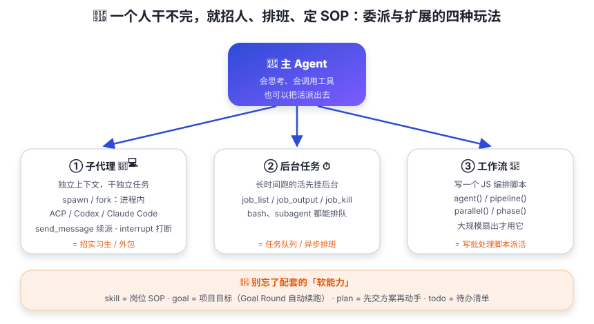

委派与扩展（子代理/工作流）
子代理、后台任务、工作流脚本、技能 SOP —— 主 agent 的四种「扩展自己」的玩法。
你是一家一人公司。活儿多起来后，你发现不能什么都自己干——有的活要花很久，有的活可以并行，有的活有固定的流程。一个人加班到凌晨三点？那是因为你还没学会当老板。
于是你开始：招实习生（子代理，独立上下文干独立任务）、把长活挂后台（jobs，边干别的边等）、写批处理脚本（workflow，大规模派活）、给员工发岗位手册（skill，复用型说明书）。这正是 dsh 主 agent 的扩展之道——老板动动嘴，员工跑断腿。

① 子代理（subagent）—— 招实习生
subagent seam 让一个 agent 把工作委派给子 agent（可选的扩展能力，不属于 agent loop 本身）。 子代理有独立的上下文 —— 主 agent 不会被一堆细节撑爆上下文。
- 一次委派（subagent_fork）：独立跑一件任务，拿一个结果回来（默认前台）；
- 可延续委派（subagent）：一份持久化的子会话，可以跨轮继续 —— 后续用
send_message续派、interrupt_agent打断、list_agents盘点； - 提供方：进程内 spawn/fork（走父级 ctx 创建）、进程外 ACP / Codex / Claude Code / dsh-sdk （远程传输，把一轮委派交给另一个产品）。
fork 还有一个贴心细节：它会把父级的「平衡的已完成轮次前缀」作为种子注入子会话 —— 子代理开局就「知道」前面聊了啥。
② 后台任务（jobs）—— 挂后台排队
长时间运行的活（bash、子代理委派）可以登记到 ctx.jobs 后台任务注册表
（id 形如 bash-3、subagent-1，状态 running / completed / killed / failed……），
主对话继续干别的，稍后用三个工具读取：
job_list # 看看有哪些后台任务在跑
job_output # 读某个任务的输出（可等待）
job_kill # 终止某个任务③ 工作流（workflow）—— 写批处理脚本
workflow 工具让模型写一个 JS 编排脚本（纯 JS、顶层 await、最后 return 一个 JSON），
在 worker 线程引擎里跑，脚本里可以扇出大量子代理。四个核心钩子：
phase('审计') // 开始一个阶段
const 结果 = await parallel([ // 并发跑，等全部完成（屏障）
() => agent('审 A', { schema }), // 跑一个子代理
() => agent('审 B', { schema }),
])
const 流水 = await pipeline(条目, 阶段1, 阶段2) // 每项过各阶段（无屏障）
log('进度汇报')
return 结果.filter(Boolean) // 最终 JSON 结果
官方指引：一两次委派用普通 subagent 就够了，大规模扇出才用 workflow。
还有固定形态的 ralph 工具：每轮启动全新子代理（无对话种子），
共享工作区当长期记忆，轮间只传一份有界结构化交接报告 —— 适合需要「换个人重新想」的任务。
注：上面脚本为便于理解而写的示意代码，并非官方文档原文；钩子名称与语义均属实（agent / pipeline / parallel / phase / log / return JSON）。
④ 软能力：skill / goal / plan / todo
| 能力 | 一句话 |
|---|---|
skill（技能） | 复用型「岗位说明书」（SOP）：目录由 ctx.skills 合并提供方，tool-skill 在会话开头注入目录、按需加载正文。技能是「可选的指令」，工具是「可调用的动作」。 |
goal（目标） | 附着在会话上的持久完成目标（active/paused/blocked/complete + Goal Round 上限），事件溯源，按修订号演进；Goal Round = 一次由目标触发的轮次。 |
plan（计划模式） | 「先交方案再动手」的软性指引状态：激活期间每个请求携带 plan 指引段，注册 exit_plan_mode 工具收尾。 |
todo（待办） | 任务清单：todo_write 每次调用整体替换，写全量 todo/write 会话事件，UI 渲染成 checklist。 |
一件独立任务 → subagent；需要长期合作、来回派活 → 可延续 subagent + 控制工具；
很多件并行/流水线 → workflow；想换全新视角反复迭代 → ralph；
长时间跑 → 挂 jobs 后台；反复用到的方法 → 沉淀成 skill。